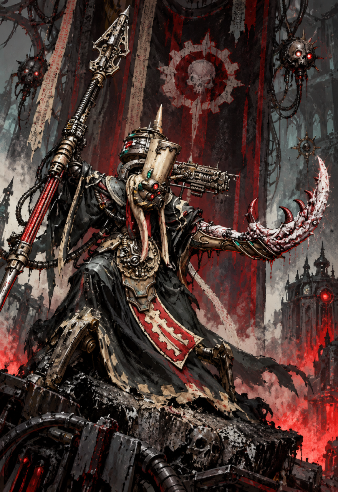

Commandement de la force
Archimagos TX-4-CP
Maître de la Forge de Yarath-Maximal
Akbaa — Ambassadeur de l'Abîme

Il y avait un magos, autrefois. TX-4-CP, c'était ce nom donné par
le Mechanicum — une désignation, une étiquette, une cage. Il était
curieux des secrets refusés à Mars, avide de savoirs entravés,
ambitieux des objectifs normalement inatteignables. Lors du traité
d'Olympus, il s'est compté parmi les magos discrètement mécontents
du « Diktat de Mars » — pour lui, les commandements de l'Empereur
n'étaient que barrières à la vraie connaissance, à la vraie
curiosité, à la vraie ambition. Mais TX-4-CP a abandonné cette
identité. Il n'en reste que l'étiquette, un vestige d'un homme qui
n'existe plus.
Lorsque Kelbor-Hal entra en connivence avec le Maître de Guerre,
TX-4-CP s'intéressait déjà au Warp et ce qu'il pouvait offrir aux
machines — une ambroisie de puissance dépassant l'entièreté des
possibilités pré-calculées jusque-là. Au fil du temps, immergé
dans l'énergie du Warp et ses travaux, il y perdit son bras gauche
au profit d'une extension démoniaque, à l'instar des Words
Bearers. Il devint Akbaa, perdant pied avec la réalité mécanique,
aspiré par un savoir que nul autre n'osait poursuivre.
Identité
TX-4-CP est un nom mort, une étiquette du Mechanicum qu'il a
abandonnée. Il répond à présent à Akbaa — un ancien mot, une
nouvelle identité, l'incarnation de ce qu'il est devenu. Ceux
qui utilisent encore TX-4-CP sont traités avec une courtoisie
qui confine au mépris. Ceux qui l'appellent Akbaa comprennent.
Manière de commander
Non par décret, mais par logique. TX-4-CP énonce les objectifs
et la Forge entière se plie aux plans, comme si les
esprits-machines eux-mêmes comprenaient ce que les hommes ne
peuvent qu'obéir. Maître du terrain : portes verrouillées,
cogitateurs réveillés, protocoles récrits au seul mot d'Akbaa.
Allégeance
À Mars, il ne reste que le souvenir. TX-4-CP sert désormais le
Warp par la Mécanique, ou la Mécanique par le Warp — nul ne sait
plus où se trouve la distinction.
Charge morale
Il a invité la Fraternité de la XVe à Yarath. Il a
scellé le pacte avec la Legio Audax. Et il n'a jamais promis à
personne de les laisser repartir — ce que tous, désormais,
comprennent trop tard.